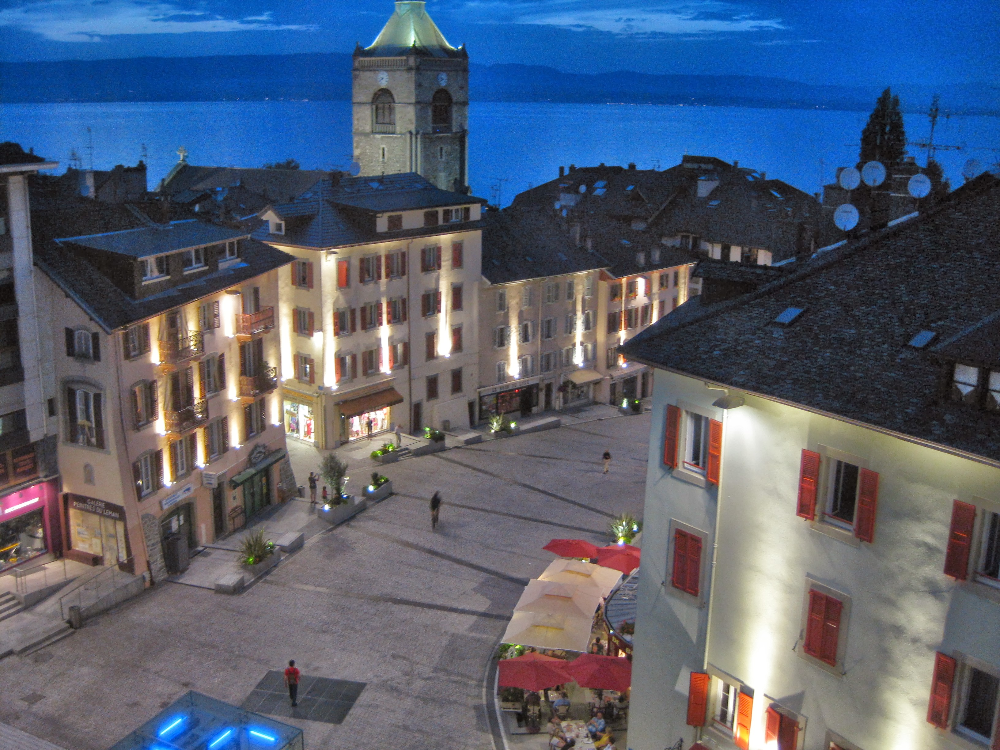

|
|
|
|
Evian Masters - Wednesday July 22nd - Rolex Pro-Am
Today my polo shirt was the exact same colour as the Evian Masters workers, so there was no problem getting the lift up to the course on the caddie/press bus, and no hassles about being delivered to the pass required area. Sat at first in the small grandstand behind the fifth green and watched Leta Lindley's group pass through. The sky looking down to the lake was very black and threatening. Over at the putting green and driving range a lot of the afternoon players were milling about. Tutta and her caddy, and Catriona Matthew and her hubby, were having a long chat. Everyone then scarpered quickly as the heavens opened and the thunder and lightning started. I was interested to see that the weather forecast for Thursday includes hail!
{kind=link}
The weather settled into a glorious sunny period, so I settled into the grandstand by the fifth again. There was absolutely no interaction between Seon Hwa Lee and her partners, and the atmosphere was decidedly chilly. Lotta Wahlin and Katherine Hull did seem to be making an effort as did Na Yeon Choi and Eunjung Yi. Morgan Pressel's group seemed to be having a very good time. Christie Kerr was scheduled to be the first off the 6th in the afternoon wave but Morgan shouted across the pond to her that there was another group to make the turn behind her.
At this point, with Anna Nordqvist's group approaching, the weather again looked nasty, and I only just made the safety of the tunnel under the grandstand at 18 before it absolutely chucked it down. It was packed at the tunnel exit with all the players from the afternoon wave who were 30 minutes late teeing off. I was standing with Karine Icher and Christie Kerr.
Once the storm passed, one of the guys in Kerr's group topped his tee shot and only made it 100 yards down the fairway. Yani Tseng also looked like she was going to have a long day. The first guy in her group only hit driver onto the very front ladies tee. One of LD's group was playing by himself. LD and the other 2 guys were on the green getting ready to putt out whilst he was still hacking his way up the fairway. He gave up before he reached the green after he duffed one into the water hazard short and right of the green.
As the next thunderstorm approached, I got the bus to the Hotel Royal to get my pass. There had been a bit of a communication cock-up and after a long wait at the incredibly expensive hotel (which has its own helicopter), I had to go back to the course to collect my guest accreditation. We had dinner in one of the lakeside restaurants outside the casino. A bit more expensive but not too bad. Caddie Larry stopped for a chat. After dinner we headed back up to L'Embuscade bar for a glass or two of wine. Larry said that the thunderstorm was not deemed close enough to call play in the ProAm. Cristie Kerr was not best pleased. Her group saw a bolt of lightning land and felt the static electricity. In the US they would have been off the course.